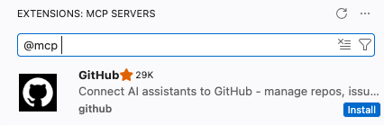
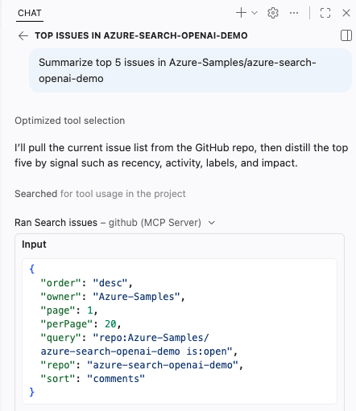
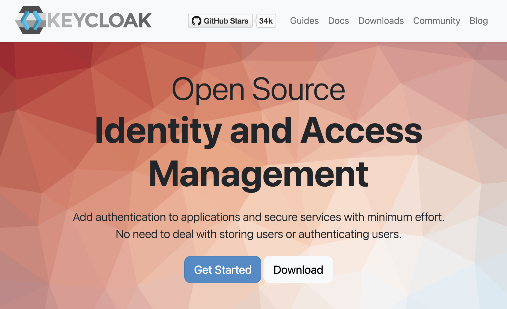

PyCon 2026 Tutorial
Build your first MCP server in Python
Pamela Fox
pamelafox.github.io/pycon2026-mcp-tutorial
Set the expectation that this is a hands-on workshop. The goal is not just to understand MCP, but to leave with running code.
About me
Python Cloud Advocate at Microsoft
Formerly: UC Berkeley, Coursera, Khan Academy, Google
Find me online at:
About you
Turn to your neighbor and introduce yourself:
Name
Location
Is this your first PyCon, or have you attended before?
What are you excited for at PyCon 2026?
Make up a new meaning for "MCP " (e.g. "M ore C offee P lease") and write it on a sticky note.
Today's agenda
Part Time
Welcome 10 min MCP 101 15 min Building agents 10 min Exercise: Use existing MCP servers 30 min Building an MCP server 15 min Exercise: Build your own server 40 min ☕️ break 20 min Advanced server features 10 min Exercise: Add visual UI and confirmation 20 min Authenticated servers 15 min Exercise: Add authentication 20 min Next steps 5 min
AI agents
Agent loop
User query
LLM
Goal
Tools
An AI agent uses an LLM to run tools in a loop to achieve a goal .
Agents are often augmented by:
Context from files, docs, or databases
Memory across a session or project
Human approvals and feedback
You've probably used an AI agent...
Coding agents like GitHub Copilot and Claude Code are AI agents.Chatbots like ChatGPT also have agentic loops now.
The agentic loop in action
Agent loop
User query
LLM
Goal
Tools
User Can I reorder my last bakery order for pickup today?
LLM find_customer("Pamela")
Tool result customer_id = "cust_42"
LLM get_last_order("cust_42")
Tool result items = [croissant, baguette]
LLM check_inventory(items)
Tool result croissant yes; baguette sold out
LLM find_substitute("baguette")
Tool result substitute = sourdough
Answer I can reorder it with sourdough instead. Want me to place it?
The key point is that the model cannot plan every call up front. It needs the customer ID before it can fetch the last order, the order items before it can check inventory, and the sold-out item before it can look for a substitute.
Agents rely on LLM tool-calling
LLMs have been trained to know how to "call tools".
LLM sees the available tools and their descriptions.
LLM suggests a tool name and arguments .
Agent runtime runs the actual code.Tool result is sent back to the LLM as context.
LLM decides whether to call another tool or answer.
The model does not execute the tool.
User request
LLM
suggested tool call
get_last_order("cust_42")
Agent runtime executes tool
tool result
items = [...]
Emphasize the security and architecture boundary: the LLM produces a structured request for a tool call. The application, framework, or MCP client decides whether to allow it and runs the function. Then the result is added to the conversation for the next model step.
MCP: Model Context Protocol
MCP is the open standard that tells agent runtimes how to discover and connect to the tools they can call .
🤖 AI agent
🗄️ Database
💬 Slack
🐙 GitHub
MCP MCP MCP
🔗 MCP specification: modelcontextprotocol.io
MCP architecture
MCP Host
AI agents and apps
MCP Client A
MCP Client B
MCP Server A
MCP Server B
Tools
Prompts
Resources
Tools
Prompts
Resources
MCP
MCP
MCP hosts like VS Code contain MCP clients that connect to servers. Servers expose tools (functions the LLM can call), resources (read-only data), and prompts (instruction templates).
MCP client/server request flow
MCP Client
MCP Server
① Discover tools
{"method": "tools/list"}
{"tools": [{"name": "get_product", "description": "...", "inputSchema": {...}}, ...]}
② Call a tool
{"method": "tools/call",
"params": {"name": "get_product", "arguments": {"id": 1}}}
{"content": [{"type": "text", "text": "Product: Widget (id=1), $9.99"}]}
MCP uses JSON-RPC 2.0. The tools/list request returns tool schemas (name, description, inputSchema) that the LLM uses to understand what's available. The tools/call request invokes a specific tool with arguments and receives structured content back.
MCP clients
Clients with the strongest support:
💻
VS Code + GitHub Copilot
Support across 100+ clients varies:
Capability Support
Tools All Prompts 43/113 Resources 47/113 OAuth with DCR 16/113 Elicitation 16/113 Apps 10/113
Tools are the universal denominator — every client supports them. VS Code and Claude Code have the strongest full-spec support including OAuth. MCPJam and MCP Inspector are testing tools rather than production agents.
Coding agent: VS Code + GitHub Copilot
1. Add MCP servers
Install from Extensions:

Or configure .vscode/mcp.json file:
{
"servers": {
"github": {
"type": "http",
"url": "https://api.githubcopilot.com/mcp/"
}
}
}
2. Use from Copilot
Once added, tools appear in chat with approvals and structured results.

Demo this live in VS Code. Show both ways to add an MCP server: install one from Extensions, then point out the .vscode/mcp.json configuration option. After that, open Copilot Chat and show the MCP tools available with approval prompts/results.
Coding agent: Claude Code
Claude Code connects terminal-first coding workflows to MCP servers.
1. Add MCP servers
Add remote servers from the CLI:
claude mcp add \
--transport http huggingface \
'https://huggingface.co/mcp?login'Then confirm what Claude Code can see:
claude mcp listFor authenticated servers, you will need to start up claude to go through the auth flow.
2. Use from Claude Code
Ask in the terminal, and Claude Code can call Hugging Face tools through MCP.
> what research papers are in 2026
about vector retrieval?
⏺ huggingface - Paper Search (MCP)
query: "vector retrieval 2026"
concise_only: true
120 papers matched the query.
Here are the first 12 results.
## Foundations of Vector Retrieval
Demo this live in Claude Code. Run the claude mcp add command for Hugging Face, then start claude to complete the login/auth flow. Ask the paper-search question and show Claude Code calling the Hugging Face MCP tool in the terminal.
Building agents with frameworks
An agent framework coordinates model calls, tool schemas, tool execution, memory or state, and final responses.
Framework Description
langchain v1 An agent-centric framework built on top of LangGraph, with optional LangSmith monitoring. pydantic-ai A flexible framework designed for type safety and observability, from the creators of Pydantic. agent-framework A framework from Microsoft with support for agentic patterns and full integration with Azure offerings. Successor to AutoGen and Semantic Kernel.
Pydantic AI + MCP
from pydantic_ai import Agent
from pydantic_ai.mcp import MCPServerStreamableHTTP
from pydantic_ai.models.openai import OpenAIChatModel
model = OpenAIChatModel("gpt-5.5")
server = MCPServerStreamableHTTP(url="https://learn.microsoft.com/api/mcp")
agent = Agent(model, toolsets=[server],
system_prompt="Use available tools to answer questions.")
result = await agent.run("How do I use DefaultAzureCredential in Python?")
print(result.output)
The framework handles model calls, MCP tool discovery, tool execution, and passing results back into the agent loop. Exercise 2 has complete versions for several frameworks.
⏳ 30 min
Exercise time
Exercise 1: tinyurl.com/pyconmcp-ex1
🙋🏽♀️ 🙋🏻♂️ 🙋🏿 🙋🏼♀️ 🙋🏾♂️ Got a question? Raise your hand, we'll come around!
Give attendees time to work through exercise1.md. Mention exercise2.md as an optional bonus for anyone who wants to build a programmatic Python agent that connects to MCP servers.
Python MCP frameworks
Framework Description
python-sdk Official Python SDK for MCP. Lets you build both clients and servers fully compatible with the protocol specification. Handles transport (stdio, SSE, HTTP), message cycles, tools, resources, and prompts. fastmcp Framework built on top of the official SDK. Adds production-focused features like server composition, proxying, OpenAPI/FastAPI generation, enterprise authentication (Google, GitHub, Azure, Auth0, etc.), deployment utilities, and client libraries.
We will use FastMCP for the tutorial because it keeps the server code compact while still building on the official MCP Python SDK.
The Python SDK is the official SDK, part of the Model Context Protocol GitHub organization. It stays as close to the specification as possible, and whenever something new lands in the spec it gets added to the SDK. However, the recommended choice is FastMCP. It is a framework built on top of the official SDK, so it has all the same functionality plus a lot more. FastMCP includes integration with auth providers, easier integration with FastAPI, easier deployment to production, logging, and OpenTelemetry support. That is why FastMCP is the framework used in this tutorial.
FastMCP server skeleton
from fastmcp import FastMCP
mcp = FastMCP("Expenses tracker")
# Define tools, prompts, and resources here...
if __name__ == "__main__":
mcp.run(transport="streamable-http", host="0.0.0.0", port=8420)
🔗 Docs: gofastmcp.com
MCP transports: STDIO vs. HTTP
STDIO HTTP (Streamable)
Client config Command to run:uv run mcp_server.py Server URL:http://localhost:8420/mcp Startup Client launches the server process Server runs before clients connect Best for Local tools, quick tests, single-user apps Remote access, web apps, multiple clients Tradeoff Simple, but tied to one local process More flexible, but needs host/port setup
Learn more: gofastmcp.com/deployment/running-server
MCP supports multiple transports. STDIO is common for local tools that the client starts for you. In this tutorial, we will use streamable HTTP so the server runs as a visible local service and can be reused by different clients and inspectors.
Tool with FastMCP
@mcp.tool
async def add_expense(
date: Annotated[date, "Date of the expense in YYYY-MM-DD format"],
amount: Annotated[float, "Positive numeric amount of the expense"],
category: Annotated[Category, "Category label"],
description: Annotated[str, "Human-readable description of the expense"],
payment_method: Annotated[PaymentMethod, "Payment method used"],
) -> str:
"""Add a new expense to the expenses.csv file."""
# Implementation ...
return f"Added expense: ${amount} for {description} on {date_iso}"
🔗 Full example: expenses_tracker.py
FastMCP turns a decorated Python function into an MCP tool. Type annotations and parameter descriptions become part of the tool schema the agent sees.
Tool signature → JSON schema
This tool signature:
@mcp.tool
async def add_expense(
date: Annotated[date, "YYYY-MM-DD"],
amount: Annotated[float, "Amount"],
category: Category,
description: str,
payment_method: PaymentMethod,
) -> str:
"""Add a new expense."""
...
→
becomes this schema:
{
"name": "add_expense",
"description": "Add a new expense.",
"inputSchema": {
"type": "object",
"properties": {
"date": {
"type": "string",
"format": "date"
},
"amount": {"type": "number"},
"category": {"type": "string"},
"description": {"type": "string"},
"payment_method": {"type": "string"}
},
"required": ["date", "amount", "category",
"description", "payment_method"]
}
}
FastMCP generates this schema from type annotations and Annotated descriptions. The LLM uses the schema to know what arguments to pass when calling the tool. Annotated strings become property descriptions, Python types map to JSON types, and enums become string enums.
Resource with FastMCP
@mcp.resource("resource://expenses")
async def get_expenses_data():
csv_content = f"Expense data ({len(expenses_data)} entries):\n\n"
for expense in expenses_data:
csv_content += (
f"Date: {expense['date']}, "
f"Amount: ${expense['amount']}, "
f"Category: {expense['category']}, "
f"Description: {expense['description']}, "
f"Payment: {expense['payment_method']}\n"
)
return csv_content
🔗 Full example: expenses_tracker.py
Resources expose read-only context that a host can attach to the model. Unlike tools, resources are selected as context rather than called as actions.
Demo: To select the resource in VS Code, use the Add Context... button in chat.<
Prompt with FastMCP
@mcp.prompt
def analyze_spending_prompt(
category: str | None = None,
start_date: str | None = None,
end_date: str | None = None,
) -> str:
# Build filters ...
return f"""Please analyze my spending patterns {filter_text} and provide:
1. Total spending breakdown by category
2. Average daily/weekly spending
3. Most expensive single transaction
4. Payment method distribution"""
🔗 Full example: expenses_tracker.py
Prompts let the server package reusable instructions or workflows. They can accept arguments, generate the final prompt text, and appear in clients that support MCP prompts.
Demo: To use the prompt in VS Code, type / and select the prompt from the options.
Run the server
Start the server:
uv run servers/expenses_tracker.pyPoint agent at the local URL:
http://localhost:8000/mcp
Start the server first, then configure the MCP client or coding agent to connect to the local streamable HTTP endpoint.
Test with MCP Inspector or MCPJam
MCP Inspector
npx @modelcontextprotocol/inspectorOfficial local tester for inspecting tools, resources, prompts, and raw MCP messages.
MCPJam
npx @mcpjam/inspector@latestA friendly web UI for trying MCP servers during development. mcpjam.com
Useful debugging loop: direct server logs first, Inspector or MCPJam second, LLM client last.
Inspector and MCPJam let you verify the server surface before adding the uncertainty of model-driven tool calls.
⏳ 40 min
Exercise time
Exercise 3: tinyurl.com/pyconmcp-ex3
🙋🏽♀️ 🙋🏻♂️ 🙋🏿 🙋🏼♀️ 🙋🏾♂️ Got a question? Raise your hand, we'll come around!
Give attendees time to work through exercise3.md. Remind them to test with direct server logs, MCP Inspector or MCPJam, and then their coding agent.
Advanced server features
MCP servers can do more than return plain strings.
MCP as a collaboration protocol
New MCP features turn agents from executors into collaborators.
💬
Elicitations
🖥️
MCP Apps
⏳
Tasks
Elicitations
Elicitations let servers request user input through the client.
Form mode
Structured data collection in the client, optionally schema-validated.
Example uses: Clarification of parameters, confirmation (especially before write ops)
URL mode
Out-of-band flow for sensitive info that must not pass through the MCP client.
Example uses: API keys, OAuth, payment
purchase-product
FORM ELICITATION
Buy 2x Raspberry Pi Pico for $13.98?
Cancel
Confirm
connect-payments
URL ELICITATION
Open a secure page to connect your payment provider.
https://payments.example.com/connect
Cancel
Open URL
Elicitations are server-to-client requests associated with an originating client request, such as during tools/call processing. Form mode collects structured input in the client and must not be used for secrets; URL mode handles sensitive or external flows out of band. In the next exercise, attendees add a purchase confirmation so the server does not blindly complete the purchase.
Form mode elicitation flow
User
MCP Client
MCP Server
tools/call id: 1
Server needs more info
InputRequiredResult: elicitation/create
mode: "form"
Client presents elicitation UI
User provides requested information
Client retries request with new information
tools/call id: 2 + user response
Form mode elicitation is nested inside an originating client request. The server does not start an unrelated conversation; it returns an input-required result, the client presents UI to the user, and then the client retries the original operation with the user-provided information.
Elicitations in FastMCP
@mcp.tool
async def remove_expenses_for_date(
expense_date: Annotated[date, "Date to remove expenses for"],
ctx: Context,
) -> str:
class DeleteExpensesConfirmation(BaseModel):
confirm: bool = Field(title="Delete expenses")
response = await ctx.elicit(
message=f"Delete expenses from {expense_date}?",
response_type=DeleteExpensesConfirmation,
)
if response.action != "accept" or not response.data.confirm:
return "Deletion cancelled."
# Delete matching rows from expenses.csv ...
🔗 Full example: expenses_tracker.pygofastmcp.com/servers/elicitation
MCP Apps
MCP Apps let tools return rich, interactive UI that renders inside chat.
Example uses
Drag-and-drop ordering
Visual profiling and flame graphs
Form-based selection
Data visualization dashboards
🤖
Here's the performance profile for handle_request():
🖥️ MCP App
flame-graph
main() - 420ms
handle_request() - 302ms
Examples of MCP servers using MCP Apps
Interactive component previews from design-system tasks.
Live diagrams in chat for visual planning and edits.
Design context and assets rendered where agents work.
MCP Apps are useful when prose is a poor interface. They let tool responses include interactive components for selection, visualization, exploration, and editing directly in the client.
MCP Apps flow
User
Agent
MCP App iframe
MCP Server
"show me analytics"
Interactive app rendered in chat
tools/call
tool input/result
tool result pushed to app
user interacts
tools/call request
forwarded call + fresh data
An MCP App is rendered in the client, but it can still participate in the tool loop. The agent calls the server, pushes returned data into the app iframe, the user interacts with the UI, and the app can request additional tool calls through the host.
Making MCP Apps with FastMCP
Four paths, from Python components to custom UI.
⚡
Prefab Apps
Quickest path: add app=True to a tool and return Prefab components.
🧩
FastMCPApp
For multi-tool UIs: separate model-visible entry points from UI-only backend tools.
🌐
Custom HTML
Use your own HTML, CSS, JavaScript, or framework for maps, 3D, video, and bespoke UI.
✨
Generative AI
Let the model design Prefab UI at runtime, execute it in a sandbox, and stream the result.
Learn more: gofastmcp.com/apps/overview
Most apps should start with Prefab Apps. Move to FastMCPApp when the UI needs multiple backend tools or composition safety. Generative UI lets the model create UI dynamically. Custom HTML is for full frontend control.
Prefab app with FastMCP
from prefab_ui.app import PrefabApp
from prefab_ui.components import Column, Heading
from prefab_ui.components.table import Table, TableBody, TableCell, TableHead, TableHeader, TableRow
@mcp.tool(app=True)
def render_expenses() -> PrefabApp:
"""Render the expenses as an interactive table."""
expenses = load_expenses_from_csv()
with Column(gap=4) as view:
Heading("Expenses")
with Table():
with TableHeader():
with TableRow():
TableHead("Date")
TableHead("Amount")
with TableBody():
for expense in expenses:
with TableRow():
TableCell(expense["date"])
TableCell(f"${float(expense['amount']):.2f}")
return PrefabApp(view=view)
🔗 Full example: expenses_tracker.py
The smallest Prefab pattern is a normal FastMCP tool with app=True. The tool returns a PrefabApp instead of plain text, and Prefab components define the UI that the client renders in chat.
⏳ 20 min
Exercise time
Exercise 4: tinyurl.com/pyconmcp-ex4
🙋🏽♀️ 🙋🏻♂️ 🙋🏿 🙋🏼♀️ 🙋🏾♂️ Got a question? Raise your hand, we'll come around!
Give attendees time to work through exercise4.md. Remind them to restart the server after adding Prefab UI tools and elicitation.
Authenticated MCP servers
When tools access user-specific data, the server needs to know who is calling.
Three approaches to restricting access
Pick the access model that matches the server boundary and the data risk.
Private network
Client
MCP
server
Private network
Deploy inside a virtual network and disable public ingress.
Best for: internal services where every allowed client is already on the network.
Client
key
header
MCP
server
Key-based access
Clients send a key in a header, and the server verifies it before responding.
Watch out: keys can be copied, leaked, or shared outside the intended user.
Client
Auth
server
MCP
server
login
token
bearer token
OAuth-based access
Clients obtain a user access token and send it as bearer authorization.
Best for: user-specific data and servers that need identity-aware authorization.
There are three common ways to restrict MCP servers. Private networking is strongest when the server is only for internal clients. Keys are simple, but a key usually identifies access to the service more than the actual human user. OAuth is the right fit when tools access user-specific data and the server needs to know who is calling.
OAuth request/response
MCP client makes requests to MCP server on behalf of a signed-in user:
MCP Client
MCP Server
Verifies the access token
and returns results scoped
to that signed-in user.
MCP
Authorization: Bearer <access_token>
{
"jsonrpc": "2.0",
"method": "tools/call",
"params": {
"name": "get_expenses",
"user_id": "abc123"
}
}
MCP
{
"jsonrpc": "2.0", "result": {
"content": [{ "amount": 200 }, ...] } }
This is the high-level access pattern for OAuth-protected MCP over HTTP. The client sends a normal MCP request, but includes a bearer token for the signed-in user. The server validates that token and returns user-scoped results. We'll use the next slides to explain how the client gets recognized and how the auth flow is wired up.
OAuth 2.1 overview
OAuth 2.1 is a standard for allowing resource owners to make authorized requests. MCP auth builds on top of OAuth 2.1.
OAuth client
MCP client
Requests access
Authorization server
Authenticates and issues tokens
Resource server
MCP server
Hosts protected tools/data
Resource owner
User
Owns the data and grants consent
authorization request
access token
OAuth names the participants more generally. The MCP client is the OAuth client, the MCP server is the OAuth resource server, the user is the resource owner, and the authorization server authenticates the user and issues access tokens. The next slide shows those roles interacting in sequence.
OAuth flow for MCP (Simplified)
User
MCP Client
Authorization Server
MCP Server
Initiates action requiring MCP server
Redirects to AS with authorization request
Presents authentication prompt
Enters credentials
Authenticates user and
validates client registration
Displays consent page for client
Grants consent
Issues authorization code
Exchanges code for access token
Returns access token
MCP request + access token
Authenticated result or error
This is the high-level OAuth flow after discovery is complete. The client redirects the user to the authorization server, the authorization server prompts for credentials, validates the client, asks for consent, issues an authorization code, and the client exchanges that code for an access token. The client then sends MCP requests with the access token and receives authenticated results or errors.
How the authorization server validates the client
Does authorization server know the MCP client ?
Pre-registration
Yes
Do authorization server and MCP client support CIMD?
x
No
CIMD:
Client Identity Metadata
Document
Yes
DCR:
Dynamic Client
Registration
x
No
The authorization server has to validate the OAuth client before it can issue tokens. If the client is pre-registered, that is straightforward. If the client has a Client ID Metadata Document, the client ID is an HTTPS URL that the authorization server can fetch and validate. Dynamic Client Registration is the fallback where the client registers itself with the authorization server at runtime.
DCR flow
Only the initial client registration step differs.
User
MCP client
Authorization server (AS)
Standard OAuth flow, with new client ID
Sends Dynamic Client Registration request to /register
?redirect_uris=...&grant_types=...&client_name=...
Stores in client database
Returns client_id
Initiates action requiring MCP server
Redirects to AS with authorization request ?client_id=NEW_CLIENT_ID
Presents authentication prompt
Enters credentials
Authenticates user and
validates client registration
Displays consent page for client
Grants consent
Issues authorization code
Exchanges code for access token
Returns access token
With Dynamic Client Registration, the MCP client first registers itself with the authorization server and receives a new client ID. After that initial registration, the rest of the OAuth flow is the same pattern: redirect with the new client ID, authenticate the user, validate the client registration, ask for consent, and issue tokens.
Support for MCP Auth across auth providers
Provider
Description
CIMD
DCR
Okta Auth0 Hosted identity provider ✅ ✅ Microsoft Entra Hosted identity provider ❌ ❌ ScaleKit Identity provider(+ wrapper of hosted IdPs) ✅ ✅ Descope Identity provider(+ wrapper of hosted IdPs) ✅ ✅ WorkOS AuthKit Identity provider(+ wrapper of hosted IdPs) ✅ ✅ Keycloak OSS identity provider ❌ ✅
Provider support varies. Entra supports metadata discovery but not CIMD or DCR, so it needs a proxy approach for arbitrary MCP clients. Keycloak supports DCR but has a few implementation caveats. Newer identity platforms tend to have broader support for the pieces MCP clients need.
Keycloak: open-source identity server

Runs from a Docker image
Admin portal
Realms separate tenants
Supports OAuth flows and DCR
Keycloak is useful for the tutorial because it gives us an open-source identity server that we can deploy and configure. It supports the OAuth flow and Dynamic Client Registration, although FastMCP uses provider code to smooth over some Keycloak DCR quirks.
Implementing MCP auth in FastMCP
Two approaches:
RemoteAuthProvider for providers with DCR support.OAuthProxy for providers that need the MCP server to implement DCR.
OAuthProvider
RemoteAuthProvider
Provider supports DCR
OAuthProxy
Server implements DCR
Descope, Supabase, ScaleKit,
AuthKit, Keycloak
Azure, Auth0, GitHub, Google,
Cognito, Discord, WorkOS
FastMCP has an OAuthProvider base class. RemoteAuthProvider is for identity providers that can support the OAuth pieces directly, especially Dynamic Client Registration. OAuthProxy is for providers like Entra that do not support DCR, so the MCP server provides the missing registration layer and forwards auth to the identity provider.
Integrating Keycloak with FastMCP
from fastmcp.server.auth.providers.keycloak import KeycloakAuthProvider
auth = KeycloakAuthProvider(
realm_url="https://example.com/realms/pycon",
base_url="http://localhost:8420",
required_scopes=["openid", "mcp:access"],
audience="product-store",
)
mcp = FastMCP("Pamela's Bakery", auth=auth)
FastMCP handles the protected resource metadata route, OAuth discovery, token validation, and the connection between the MCP server and the Keycloak realm. The important configuration values are the realm URL, the public base URL for this MCP server, the scopes the client must request, and the expected audience.
⏳ 35 min
Exercise time
Exercise 5: tinyurl.com/pyconmcp-ex5
🙋🏽♀️ 🙋🏻♂️ 🙋🏿 🙋🏼♀️ 🙋🏾♂️ Got a question? Raise your hand, we'll come around!
Give attendees time to work through exercise5.md. Have the instructor-provided Keycloak realm URL, audience, and test credentials ready.
Productionizing MCP servers
Testing : Test with both direct MCP tools and LLM-driven clients.Evaluation : Optimize tool descriptions for user scenarios across agents.Usage controls : Rate-limit expensive or state-changing tools.Observability : Log tool calls without logging sensitive payloads.Security : Continuously audit tools for security risks and logs for abuse.
Security questions to ask every server
Who is allowed to call this tool?
What data can the tool read or mutate?
Does the user understand when state will change?
Can prompt injection alter the server's authority?
What happens when the model passes surprising arguments?
Before you go
Please take the tutorial survey.
Your feedback helps improve future PyCon tutorials and tells us what to build next.
Ask attendees to scan the QR code and fill out the survey before leaving.